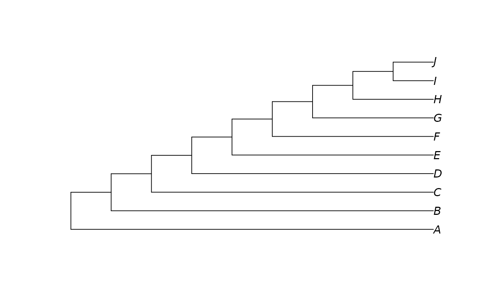
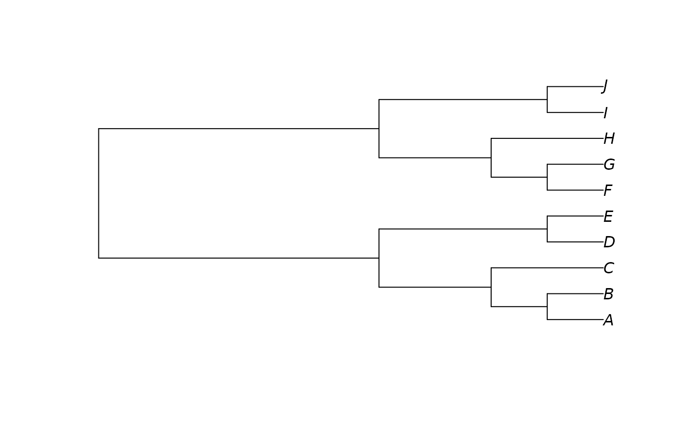

RandomTree(), PectinateTree(), BalancedTree() and StarTree()
generate trees with the specified shapes and leaf labels.
Usage
RandomTree(tips, root = FALSE, nodes, lengths = NULL)
YuleTree(tips, addInTurn = FALSE, root = TRUE, lengths = NULL)
PectinateTree(tips, lengths = NULL)
BalancedTree(tips, lengths = NULL)
StarTree(tips, lengths = NULL)Arguments
- tips
An integer specifying the number of tips, or a character vector naming the tips, or any other object from which
TipLabels()can extract leaf labels.- root
Character or integer specifying tip to use as root; or
TRUEto root the tree on a random edge; orFALSEto return an unrooted tree.- nodes
Number of nodes to generate. The default and maximum,
tips - 1, generates a binary tree; setting a lower value will induce polytomies.- lengths
a numeric vector specifying the edge lengths of the tree.
- addInTurn
Logical specifying whether to add leaves in the order of
tips. IfFALSE, leaves will be added in a random order.
Value
Each function returns an unweighted binary tree of class phylo with
the specified leaf labels. Trees are rooted unless root = FALSE.
RandomTree() returns a topology drawn at random from the uniform
distribution (i.e. each binary tree is drawn with equal probability).
Trees are generated by inserting
each tip in term at a randomly selected edge in the tree.
Random numbers are generated using a Mersenne Twister.
If root = FALSE, the tree will be unrooted, with the first tip in a
basal position. Otherwise, the tree will be rooted on root.
YuleTree() returns a topology generated by the Yule process
(Steel and McKenzie 2001)
,
i.e. adding leaves in turn adjacent to a randomly-chosen existing leaf.
PectinateTree() returns a pectinate (caterpillar) tree.
BalancedTree() returns a balanced (symmetrical) tree, in preorder.
StarTree() returns a completely unresolved (star) tree.
References
Steel MA, McKenzie A (2001). “Properties of Phylogenetic Trees Generated by Yule-type Speciation Models.” Mathematical Biosciences, 170(1), 91–112. doi:10.1016/S0025-5564(00)00061-4 . ()
See also
Other tree generation functions:
ConstrainedNJ(),
NJTree(),
TreeNumber,
TrivialTree
Examples
RandomTree(LETTERS[1:10])
#>
#> Phylogenetic tree with 10 tips and 8 internal nodes.
#>
#> Tip labels:
#> A, B, C, D, E, F, ...
#>
#> Unrooted; no branch length.
data("Lobo")
RandomTree(Lobo.phy)
#>
#> Phylogenetic tree with 48 tips and 46 internal nodes.
#>
#> Tip labels:
#> Tubiluchus_Priapulida, Cricocosmia, Aysheaia, Siberion, Onychodictyon_ferox, Onychodictyon_gracilis, ...
#>
#> Unrooted; no branch length.
YuleTree(LETTERS[1:10])
#>
#> Phylogenetic tree with 10 tips and 9 internal nodes.
#>
#> Tip labels:
#> I, G, F, A, D, J, ...
#>
#> Rooted; no branch length.
plot(PectinateTree(LETTERS[1:10]))

plot(BalancedTree(LETTERS[1:10]))

plot(StarTree(LETTERS[1:10]))